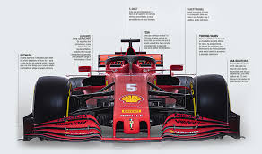

<h1><!Doctype html>
<html>
<link rel="stylesheet" href="https://cdnjs.cloudflare.com/ajax/libs/font-awesome/4.7.0/css/font-awesome.min.css"</link>
<script src='https://kit.fontawesome.com/a076d05399.js'></script>
<link href="css/menu.css" rel="stylesheet" </link>
<style>


</style>
<body style="background-color:black;">
<div class="center">
<h3>Sensores de detecção para carro de formula 1</h3>
</div>
<div class="center2">
<div class="btn-group">

 
 <a href="sensorOleo.html"><button class="btn"><i class="fa fa-tint"></i>  Níveis e temperatura do óleo</button></a>
  <a href="NivelCombustivel.html"><button class="btn"><i class="fas fa-gas-pump"></i> Nível de combustível</button></a>
<a href ="TempMotor.html"><button class="btn"><i class="fa fa-thermometer-full"></i> Temperatura do motor</button></a>
 <a href ="Pneus.html"><button class="btn"><i class="fa fa-road"></i> Desgaste dos pneus</button></a>
  <a href ="tunelVento.html"> <button class="btn"><i class="fas fa-wind"></i> Relatório do túnel de vento</button></a>
 <a href="projecaoPontuacao.html"> <button class="btn"><i class="fa fa-bar-chart"></i> Relatório de projeção de pontuação</button></a>
  <a href ="relatorioMetereologico.html"><button class="btn"><i class="fa fa-cloud"></i>  Relatório Metereológico</button></a>
     <a href ="falhaMotor.html"><button class="btn"><i class="fa fa-car"></i>  Detector de falhas do motor</button></a>
	 <a href ="displayVolante.html"> <button class="btn"><i class="fas fa-dharmachakra"></i>  Display do volante</button></a>
	<a href ="relatorioGeral.html">    <button class="btn"><i class="fa fa-line-chart"></i>  Relatório geral</button></a>
		


	  
</div>

</body>
</html>
</h1>

